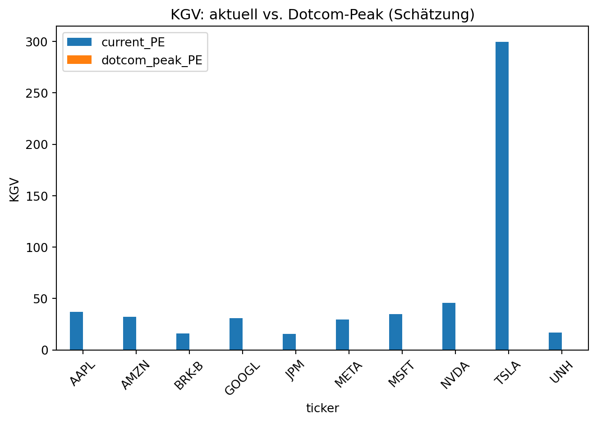

In diesem Beitrag berechne ich das Kurs‑Gewinn‑Verhältnis (KGV / P/E) der derzeit größten 10 Aktien (nach Marktkapitalisierung) und vergleiche diese Werte mit den Spitzen‑KGVs aus der Dotcom‑Blase (ca. 1998–2002) für eine Auswahl typischer Dotcom‑Titel.
Wichtig: Historische Fundamentaldaten sind nicht immer vollständig oder konsistent verfügbar. Für die historischen KGV‑Schätzungen verwende ich verfügbare Jahresergebnisse (Net Income) aus yfinance und teile diese durch die aktuelle Aktienanzahl als Näherung — das ist eine grobe Annäherung und kann von genauer historischen Berichterstattung abweichen. Details siehe Methodik im Beitrag.
Zusammenfassung
Wir laden live Daten via yfinance und pandas, bestimmen die 10 größten Titel heute (Marktkapitalisierung) und berechnen:
aktuelles KGV (wenn verfügbar, trailingPE),
historische Peak‑KGV (Schätzwert) in der Dotcom‑Periode für ausgewählte Dotcom‑Titel.
Die Ausführung kann einige Minuten dauern (API‑Aufrufe).
import pandas as pdimport yfinance as yfimport datetimeimport matplotlib.pyplot as pltfrom time import sleeppd.options.display.float_format ='{:,.2f}'.formatdef safe_info(ticker):try:return yf.Ticker(ticker).infoexceptExceptionas e:return {}# 1) Ermitteln der S&P500-Tickerliste von Wikipedia (als Universe)sp500 =Nonetry: tables = pd.read_html('https://en.wikipedia.org/wiki/List_of_S%26P_500_companies') sp500 = tables[0]['Symbol'].tolist()exceptException:# Fallback: eine kurze Liste bekannter große Titel sp500 = ['AAPL','MSFT','NVDA','GOOGL','AMZN','META','TSLA','BRK-B','JPM','UNH']# Manche Symbole auf Wikipedia enthalten Punkte (BRK.B) oder andere Formen – yfinance erwartet -B stylesp500 = [s.replace('.', '-') for s in sp500]print(f"Universe size: {len(sp500)}")# 2) Sammeln MarketCap und trailingPE für Universe (in Batches, schonend)rows = []for i, t inenumerate(sp500, 1): info = safe_info(t) mc = info.get('marketCap') pe = info.get('trailingPE') shortName = info.get('shortName') or t rows.append({'ticker': t, 'name': shortName, 'marketCap': mc, 'trailingPE': pe})if i %50==0: sleep(1)df = pd.DataFrame(rows).dropna(subset=['marketCap']).sort_values('marketCap', ascending=False).reset_index(drop=True)top10 = df.head(10).copy()top10.index =range(1, len(top10)+1)top10
Universe size: 10
ticker
name
marketCap
trailingPE
1
NVDA
NVIDIA Corporation
4492024086528
45.78
2
AAPL
Apple Inc.
4102180831232
37.00
3
GOOGL
Alphabet Inc.
3788308217856
30.91
4
MSFT
Microsoft Corporation
3640913559552
34.84
5
AMZN
Amazon.com, Inc.
2426144555008
32.10
6
META
Meta Platforms, Inc.
1682426953728
29.50
7
TSLA
Tesla, Inc.
1455345238016
299.72
8
BRK-B
Berkshire Hathaway Inc. New
1073198530560
15.91
9
JPM
JP Morgan Chase & Co.
864880099328
15.58
10
UNH
UnitedHealth Group Incorporated
293872173056
16.91
# 3) Zeige aktuelle Top10 mit Marktwert + KGVdisplay(top10[['ticker','name','marketCap','trailingPE']])# 4) Auswahl historischer Dotcom-Titel zur Analyse (üblich in 1999/2000)dotcom_candidates = ['MSFT','CSCO','INTC','ORCL','SUNW','YHOO','AOL','EBAY','AMZN','SAP']dotcom_candidates = [d.replace('.', '-') for d in dotcom_candidates]def historical_peak_pe(ticker, start='1998-01-01', end='2002-12-31'): t = yf.Ticker(ticker) hist = t.history(start=start, end=end, auto_adjust=False)if hist.empty:returnNone# Peak price and date peak_row = hist['Close'].idxmax() peak_price =float(hist.loc[peak_row,'Close']) peak_date = peak_row.date()# Try to obtain annual net income (Ticker.earnings) and approximate EPS by using current sharesOutstanding earnings =Nonetry: earnings = t.earningsexceptException: earnings =None shares =Nonetry: shares = t.info.get('sharesOutstanding', None)exceptException: shares =None# Choose the earnings year nearest <= peak year est_eps =Noneifisinstance(earnings, pd.DataFrame) andnot earnings.empty and shares:try: peak_year = peak_date.year# Use the earnings for the year a bit before the peak candidate_years = [peak_year, peak_year-1, peak_year-2] sel =Nonefor y in candidate_years:if y in earnings.index: sel = ybreakif sel isNone:# pick last available sel = earnings.index.max() net_income =float(earnings.loc[sel,'Earnings'])# approximate EPS = net_income / sharesOutstanding est_eps = net_income / sharesexceptException: est_eps =None peak_pe =Noneif est_eps and est_eps>0: peak_pe = peak_price / est_epsreturn {'ticker': ticker,'peak_date': peak_date,'peak_price': peak_price,'approx_eps': est_eps,'peak_pe_estimate': peak_pe,'shares': shares }hist_rows = []for t in dotcom_candidates:try: r = historical_peak_pe(t)# Normalize missing results into a dict so pandas can consume consistentlyif r isNone: r = {'ticker': t,'peak_date': None,'peak_price': None,'approx_eps': None,'peak_pe_estimate': None,'shares': None, } hist_rows.append(r)exceptExceptionas e: hist_rows.append({'ticker': t,'peak_date': None,'peak_price': None,'approx_eps': None,'peak_pe_estimate': None,'shares': None, }) sleep(0.5)# Filter to dictionaries (robustness) and then build DataFramehist_rows = [r for r in hist_rows ifisinstance(r, dict)]hist_df = pd.DataFrame(hist_rows).set_index('ticker')hist_df
ticker
name
marketCap
trailingPE
1
NVDA
NVIDIA Corporation
4492024086528
45.78
2
AAPL
Apple Inc.
4102180831232
37.00
3
GOOGL
Alphabet Inc.
3788308217856
30.91
4
MSFT
Microsoft Corporation
3640913559552
34.84
5
AMZN
Amazon.com, Inc.
2426144555008
32.10
6
META
Meta Platforms, Inc.
1682426953728
29.50
7
TSLA
Tesla, Inc.
1455345238016
299.72
8
BRK-B
Berkshire Hathaway Inc. New
1073198530560
15.91
9
JPM
JP Morgan Chase & Co.
864880099328
15.58
10
UNH
UnitedHealth Group Incorporated
293872173056
16.91
/Users/timowagner/Programmieren/timo-wagner.github.io/.venv/lib/python3.14/site-packages/yfinance/scrapers/fundamentals.py:36: DeprecationWarning: 'Ticker.earnings' is deprecated as not available via API. Look for "Net Income" in Ticker.income_stmt.
warnings.warn("'Ticker.earnings' is deprecated as not available via API. Look for \"Net Income\" in Ticker.income_stmt.", DeprecationWarning)
/Users/timowagner/Programmieren/timo-wagner.github.io/.venv/lib/python3.14/site-packages/yfinance/scrapers/fundamentals.py:36: DeprecationWarning: 'Ticker.earnings' is deprecated as not available via API. Look for "Net Income" in Ticker.income_stmt.
warnings.warn("'Ticker.earnings' is deprecated as not available via API. Look for \"Net Income\" in Ticker.income_stmt.", DeprecationWarning)
/Users/timowagner/Programmieren/timo-wagner.github.io/.venv/lib/python3.14/site-packages/yfinance/scrapers/fundamentals.py:36: DeprecationWarning: 'Ticker.earnings' is deprecated as not available via API. Look for "Net Income" in Ticker.income_stmt.
warnings.warn("'Ticker.earnings' is deprecated as not available via API. Look for \"Net Income\" in Ticker.income_stmt.", DeprecationWarning)
/Users/timowagner/Programmieren/timo-wagner.github.io/.venv/lib/python3.14/site-packages/yfinance/scrapers/fundamentals.py:36: DeprecationWarning: 'Ticker.earnings' is deprecated as not available via API. Look for "Net Income" in Ticker.income_stmt.
warnings.warn("'Ticker.earnings' is deprecated as not available via API. Look for \"Net Income\" in Ticker.income_stmt.", DeprecationWarning)
$SUNW: possibly delisted; no timezone found
HTTP Error 404: {"quoteSummary":{"result":null,"error":{"code":"Not Found","description":"Quote not found for symbol: YHOO"}}}
$YHOO: possibly delisted; no timezone found
$AOL: possibly delisted; no price data found (1d 1998-01-01 -> 2002-12-31)
/Users/timowagner/Programmieren/timo-wagner.github.io/.venv/lib/python3.14/site-packages/yfinance/scrapers/fundamentals.py:36: DeprecationWarning: 'Ticker.earnings' is deprecated as not available via API. Look for "Net Income" in Ticker.income_stmt.
warnings.warn("'Ticker.earnings' is deprecated as not available via API. Look for \"Net Income\" in Ticker.income_stmt.", DeprecationWarning)
/Users/timowagner/Programmieren/timo-wagner.github.io/.venv/lib/python3.14/site-packages/yfinance/scrapers/fundamentals.py:36: DeprecationWarning: 'Ticker.earnings' is deprecated as not available via API. Look for "Net Income" in Ticker.income_stmt.
warnings.warn("'Ticker.earnings' is deprecated as not available via API. Look for \"Net Income\" in Ticker.income_stmt.", DeprecationWarning)
/Users/timowagner/Programmieren/timo-wagner.github.io/.venv/lib/python3.14/site-packages/yfinance/scrapers/fundamentals.py:36: DeprecationWarning: 'Ticker.earnings' is deprecated as not available via API. Look for "Net Income" in Ticker.income_stmt.
warnings.warn("'Ticker.earnings' is deprecated as not available via API. Look for \"Net Income\" in Ticker.income_stmt.", DeprecationWarning)
peak_date
peak_price
approx_eps
peak_pe_estimate
shares
ticker
MSFT
1999-12-27
59.56
None
None
7,432,377,655.00
CSCO
2000-03-27
80.06
None
None
3,951,094,563.00
INTC
2000-08-31
74.88
None
None
4,770,000,000.00
ORCL
2000-09-01
46.31
None
None
2,850,792,605.00
SUNW
None
NaN
None
None
NaN
YHOO
None
NaN
None
None
NaN
AOL
None
NaN
None
None
NaN
EBAY
2000-03-24
12.82
None
None
452,000,000.00
AMZN
1999-12-10
5.33
None
None
10,690,216,011.00
SAP
2000-03-10
83.94
None
None
1,164,604,232.00
# 5) Zusammenführung: Top10 heute vs. historische Dotcom-Peaks (für dotcom_candidates)cur = top10.set_index('ticker')[['name','marketCap','trailingPE']]dot = hist_df[['peak_date','peak_price','approx_eps','peak_pe_estimate','shares']]print('\nAktuelle Top-10 (Marktkapitalisierung)')display(cur)print('\nDotcom-Auswahl: geschätzte Peak-KGVs (1998-2002) — Näherung, siehe Methodik)')display(dot)# 6) Plot: Vergleich (Barplot) — nur für Werte vorhandenplt.figure(figsize=(10,5))plot_df = pd.DataFrame({'current_PE': cur['trailingPE'].dropna(),'dotcom_peak_PE': dot['peak_pe_estimate'].dropna()})# align indices for plotting side-by-side if some tickers overlapplot_df = plot_df.fillna(0)plot_df.plot(kind='bar', rot=45)plt.title('KGV: aktuell vs. Dotcom-Peak (Schätzung)')plt.ylabel('KGV')plt.tight_layout()plt.show()
/var/folders/cp/w44022r157l_c3xhd8y3m5h00000gn/T/ipykernel_49881/1612904208.py:19: FutureWarning: Downcasting object dtype arrays on .fillna, .ffill, .bfill is deprecated and will change in a future version. Call result.infer_objects(copy=False) instead. To opt-in to the future behavior, set `pd.set_option('future.no_silent_downcasting', True)`
plot_df = plot_df.fillna(0)
<Figure size 960x480 with 0 Axes>

Methodik und Hinweise
Die aktuelle Top‑10 wurde anhand der im Live‑Abruf verfügbaren marketCap‑Felder ermittelt.
Aktuelle KGVs stammen aus trailingPE von yfinance (sofern verfügbar).
Historische Peak‑KGVs sind Schätzungen: Peak‑Schlusskurse (1998–2002) geteilt durch eine Näherung des historischen EPS (berechnet aus gemeldeten Jahres‑Nettoergebnissen geteilt durch die aktuell berichtete Aktienanzahl). Diese Näherung kann verzerrt sein, weil sich die Anzahl der ausgegebenen Aktien über die Zeit ändert und nicht alle historischen Jahresdaten vollständig sind.
Wenn du möchtest, kann ich:
die Dotcom‑Auswahl erweitern oder anpassen (z. B. nur NASDAQ‑Top10 von 2000),
die historische EPS‑Berechnung verbessern (z. B. indem wir historische Aktienanzahlen versuchen zu beziehen),
den Post rendern und veröffentlichen (quarto publish gh-pages).